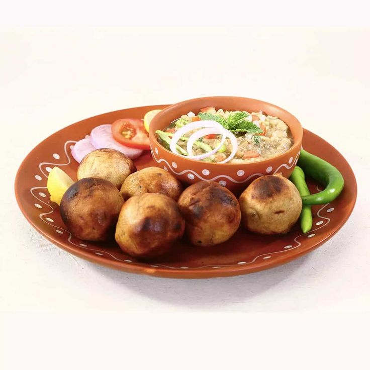

Litti Chokha

Description
Litti Chokha is a famous rustic dish from Bihar, Jharkhand, and Eastern Uttar Pradesh consisting of spiced, sattu-stuffed whole-wheat balls served with a smoky roasted vegetable mash.
Ingredients
For the Litti Dough (Outer Shell)
- Whole wheat flour (Atta): 2 cups
- Ghee: 2 tablespoons (for binding/moyan)
- Carom seeds (Ajwain): ½ teaspoon (crushed between palms)
- Salt: ½ teaspoon
- Water: As needed to knead a firm dough
For the Sattu Stuffing (Inside the Litti)
- Sattu (Roasted gram flour): 1 cup
- Onion: 1 medium, finely chopped
- Garlic: 5-6 cloves, finely minced
- Ginger: 1-inch piece, grated or finely minced
- Green chilies: 2-3, finely chopped
- Fresh coriander: ¼ cup, finely chopped
- Mustard oil: 1 to 2 tablespoons (essential for authentic flavor)
- Pickle masala (Achaar ka masala): 1 tablespoon (mango or stuffed red chili pickle works best)
- Lemon juice: 1 tablespoon
- Carom seeds (Ajwain): ½ teaspoon
- Nigella seeds (Kalonji): ½ teaspoon
- Salt: To taste (keeping in mind the pickle masala also contains salt)
- Water: 1-2 tablespoons (just enough to make the mixture slightly moist and crumbly)
For the Chokha (Spicy Mash)
- Eggplant (Baingan/Brinjal): 1 large (the round roasting variety)
- Tomatoes: 2 medium-sized
- Potatoes: 2 medium (boiled and peeled)
- Garlic: 4-5 cloves (can be roasted inside the eggplant)
- Onion: 1 medium, finely chopped
- Green chilies: 2, finely chopped
- Ginger: ½ inch, finely minced
- Fresh coriander: 2 tablespoons, chopped
- Mustard oil (Raw): 1 tablespoon (adds the traditional pungent kick)
- Salt: To taste
Steps
- Knead the Dough: In a large bowl, mix the whole wheat flour, crushed ajwain, salt, and ghee. Rub the ghee into the flour until it resembles breadcrumbs. Gradually add water and knead into a dough that is firmer than regular roti dough. Cover with a damp cloth and let it rest.
- Roast the Chokha Vegetables: Make a few slits in the eggplant and insert the unpeeled garlic cloves inside. Roast the eggplant and tomatoes directly over a gas burner or charcoal fire on medium heat. Turn them occasionally until the skins are completely charred and the insides are soft. Set aside to cool.
- Mix the Sattu Stuffing: In a mixing bowl, combine the sattu, chopped onions, minced garlic, ginger, green chilies, coriander, mustard oil, pickle masala, lemon juice, ajwain, kalonji, and salt. Sprinkle 1-2 tablespoons of water and mix well. The mixture should feel dry and crumbly but clump together if you squeeze it in your fist.
- Mash the Chokha: Once the roasted eggplant and tomatoes are cool enough to handle, peel off the charred skins (it's okay if a few black flecks remain). Mash them in a bowl along with the boiled potatoes. Stir in the raw mustard oil, chopped onions, raw green chilies, minced ginger, fresh coriander, and salt.
- Stuff the Littis: Divide the rested dough into lemon-sized balls. Press the edges of a dough ball with your thumbs to form a small cup or bowl shape (keep the center slightly thicker than the edges). Place 2 tablespoons of the sattu stuffing inside. Bring the edges together, seal tightly, and roll it back into a smooth, round ball. Repeat for all the dough.
- Roast the Littis: On a gas stove: Place a wire roasting rack (jali) over the burner. Roast the littis on low-medium flame, turning frequently to avoid burning, until they are golden brown and develop slight cracks. In an oven: Preheat to 200°C (400°F). Bake for 30-40 minutes, flipping them halfway, until browned and cooked through.
- Dip in Ghee and Serve: Take the hot roasted littis and gently press or crack the top using your thumb or a spoon. Dunk them directly into a bowl of melted ghee so the fat seeps into the sattu center. Serve immediately alongside the freshly made chokha.
Home